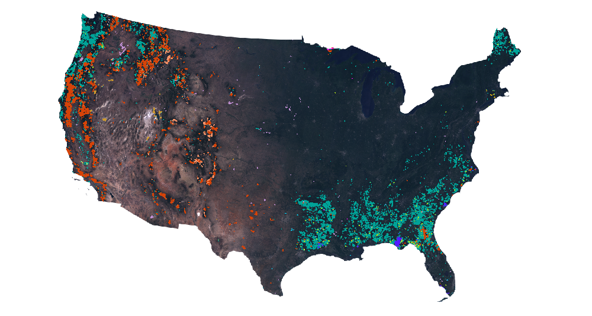

Landscape Change Monitoring System (LCMS) is a remote sensing-based system for mapping and monitoring landscape change across the United States.
LCMS is produced by the USDA Forest Service Field Services and Innovation Center — Geospatial Office (FSIC-GO).
30m data layers of:
- Cause of vegetation cover Change
- Land Cover
- Land Use
Annually 1985 to 2024
Conterminous U.S. (CONUS), Alaska (AK), Puerto Rico and U.S. Virgin Islands (PRUSVI), and Hawaii (HI)
Alaska
Puerto Rico and U.S. Virgin Islands
Hawaii
Conterminous U.S.
- Wind
- Hurricane
- Snow or Ice Transition
- Desiccation
- Inundation
- Prescribed Fire
- Wildfire
- Mechanical Land Transformation
- Tree Removal
- Defoliation
- Southern Pine Beetle
- Insect, Disease, or Drought Stress
- Other Loss
- Vegetation Successional Growth
- Slow Loss
- Fast Loss
- Gain
- (Cause of Change coming summer 2025)
DATA DESCRIPTIONS
Change
Monitor annual vegetation cover changes caused by short and long-duration disturbance events, as well as water desiccation or inundation and snow/ice transition.
- Wind
- Hurricane
- Snow or Ice Transition
- Desiccation
- Inundation
- Prescribed Fire
- Wildfire
- Mechanical Land Transformation
- Tree Removal
- Defoliation
- Southern Pine Beetle
- Insect, Disease, or Drought Stress
- Other Loss
- Vegetation Successional Growth
- Slow Loss
- Fast Loss
- Gain

Changes from insects, disease, and wildfire, Colo.

Vegetation change largely caused by timber harvest and wildfire in the Willamette National Forest, Oreg.
Land Cover
Monitor annual changes to types of surface components of the land that are present and visible including vegetation and other biophysical attributes of the land surface.
- Tree
- Tall Shrub & Tree Mix (AK Only)
- Shrub & Tree Mix
- Grass/Forb/Herb & Tree Mix
- Barren & Tree Mix
- Tall Shrub (AK Only)
- Shrub
- Grass/Forb/Herb & Shrub Mix
- Barren & Shrub Mix
- Grass/Forb/Herb
- Barren & Grass/Forb/Herb Mix
- Barren or Impervious
- Snow or Ice
- Water

Change in Lake Mead water level, Nev. caused by water consumption & decadal drought

Change in extent of the Columbia Glacier, Alaska
Land Use
Monitor annual changes in the intended human use of the land, which represents economic and cultural activities practiced at a given place.
- Agriculture
- Developed
- Forest
- Other
- Rangeland
For additional information about LCMS change, land cover, or land use classes see the LCMS methods document.

Urban development of Atlanta, Ga.

Urban development of Las Vegas, Nev.
EXPLORE LCMS DATA
Several web mapping applications are available to explore, summarize, and produce reports of how our landscape is changing.
The LCMS Data Explorer is designed to make LCMS data accessible and actionable for a wide range of users, from land managers and scientists to the general public. Users can:
- Zoom and pan across the United States to view landscape change at national, regional, or local scales.
- Select specific years to visualize annual changes in vegetation cover, land cover, and land use.
- Overlay multiple LCMS data products to compare trends and patterns over time.
- Generate summary statistics and charts for areas of interest.
- Download data for further analysis or reporting.
The LCMS Dashboard is designed to provide the ability to quickly summarize and generate reports of how our landscapes are changing. Users can:
- Select a summary area by selecting State/County or choose the Forest Service hierarchy to browse through Forest Service Regions, Forests, and Ranger Districts
- Define the analysis years using the year slider.
- Browse the LCMS products available in the Tabs. The three LCMS products are Vegetation Change, Land Cover, and Land Use. The selected LCMS product will be visible on the map with a change slider to compare the first and last year selected.
- Export a pdf report

The LCMS Base Learner Explorer allows users to interactively view the raw input data and temporal segmentation results that are used to generate final LCMS products. This tool is especially useful for researchers and analysts interested in understanding the underlying data sources used to create LCMS model outputs. Users can:
- Visualize base learner (raw input) data for any location in the U.S.
- Compare outputs from different temporal segmentation algorithms (e.g., LandTrendr, CCDC) to gain insight into the strengths and weaknesses of each segmentation method..
- Visualize synthetic composite time-lapses
- Download base learner and segmentation tabular and chart data for further analysis.

The LCMS In-Motion provides interactive animations and visualizations of landscape change over time using LCMS products. Users can:
- View time-lapse animations of LCMS data for selected areas.
- Explore how land cover, land use, and change classes evolve year by year.
- Export animations for presentations or reports.

Additional LCMS data exploration tools
The LCMS IDS Explorer allows users to compare LCMS-mapped vegetation change with the USDA Forest Service Insect and Disease Survey (IDS) dataset. This tool is designed to help users:
- Visualize spatial overlap and differences between LCMS change products and IDS aerial survey data.
- Explore patterns of insect and disease impacts alongside LCMS disturbance and recovery classes.
- Interactively select areas and years to compare mapped results.
- Download summary data for further analysis.
DOWNLOAD
Click on the folders to download annual LCMS data
ABOUT
Knowing where, when, and what factors create change across landscapes is critical to making sound land management decisions. To support land managers and scientists with this need, an interagency effort between leading remote sensing scientists and application specialists in the U.S. Department of Agriculture Forest Service, U.S. Geological Survey, NASA, and numerous universities have collaborated to develop and produce a Landscape Change Monitoring System (LCMS).
LCMS is a remote sensing-based system for mapping and monitoring landscape change across the United States. LCMS provides a “best available” map of landscape change that leverages advances in time series-based change detection techniques, Landsat and Sentinel data availability, cloud-based computing power, and big data analysis methods.
The LCMS Science Team initially developed LCMS methods (Cohen et al., 2018; Healey et al., 2018). The LCMS Production Team and Science Team review methods frequently to ensure the LCMS mapping process is based on the best available science. All LCMS map products are recreated annually from 1985 to the most recent full growing season. LCMS mapping areas include all the United States and its territories. The current operational set of outputs covers the conterminous United States (CONUS), Alaska (AK), Puerto Rico and U.S. Virgin Islands (PRUSVI), and Hawaii (HI).
Literature
-
Healey
et al 2018
- Cohen
et
al 2017
-
Cohen
et al 2018
LCMS Methods
Feedback
We welcome your feedback. If you would be willing to take our short user survey, the provided information will help inform future improvements and additional functionalities. Thank you.
TAKE SURVEY